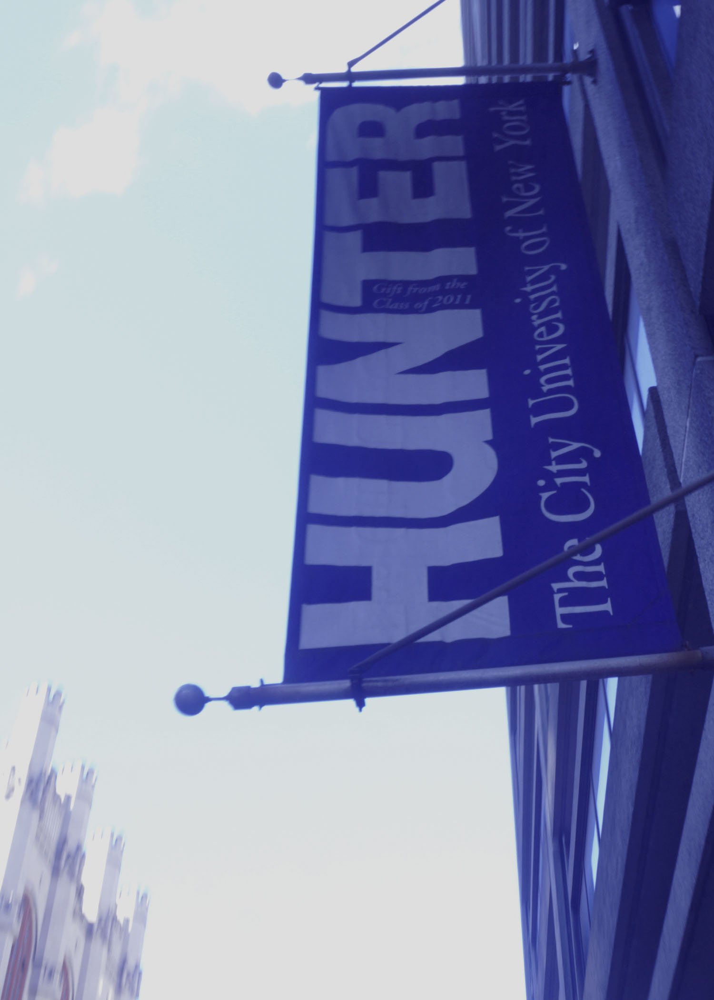

With my second image I chose to represent Hunter and its very proud colors while including a building that has not been modernized because I find the building to be beautifully made. I present this by using a color and tone to change the saturation to a deep purple to bring out the colors that represent Hunter. Changing the commonly used edits made to photographs, I make this piece visually interesting to my audience.
